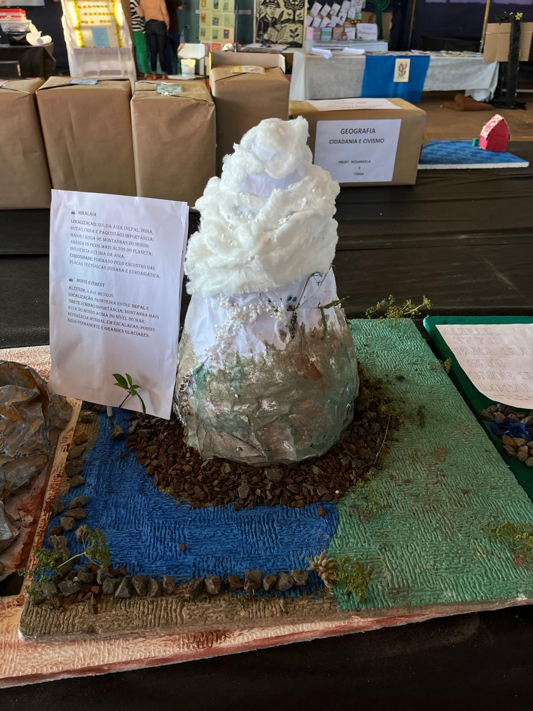
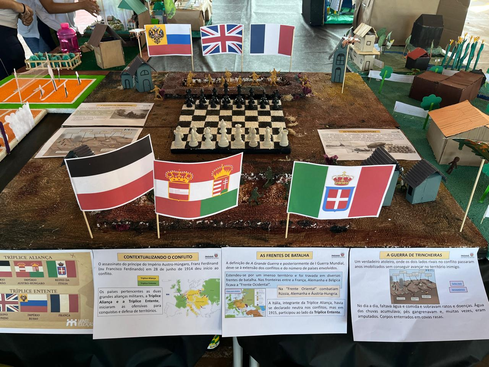
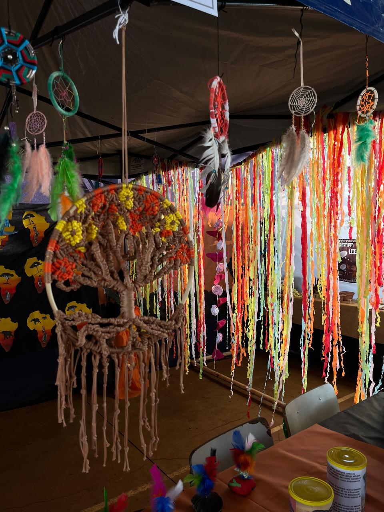
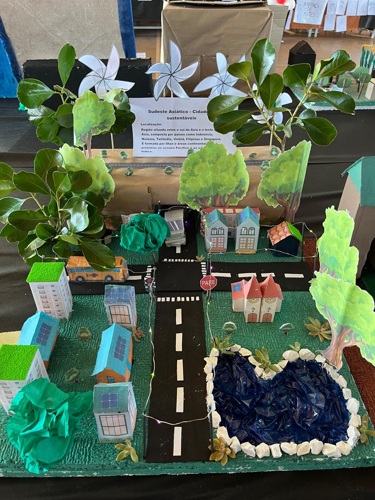

O nome da feira resume o que o colégio quer formar: pessoas com valores, com conhecimento e com iniciativa.
Ser
Valores, cidadania, respeito e convivência.
Saber
Conhecimento, pesquisa e curiosidade.
Empreender
Iniciativa para transformar ideias em ação.
Por que essa feira importa
A feira escolar é um evento breve, mas o aprendizado que ela movimenta é contínuo. Antes e depois da exposição, cada trabalho reflete um processo de pesquisa, tentativa e erro, aprimoramento e diálogo constante entre professores e estudantes.

Aprender fazendo
Na sala de aula, o conteúdo chega pelo professor. Na feira, o caminho se inverte: são os alunos que pesquisam, testam e montam o trabalho. Quando precisam explicar o que fizeram para alguém de fora, descobrem o que realmente entenderam, e o aprendizado fica de um jeito que a prova sozinha não consegue.

Postura, responsabilidade e trabalho em equipe
Receber visitantes, falar em público e responder perguntas são experiências que ajudam os alunos a desenvolver confiança, comunicação e segurança. Dividir tarefas, cumprir prazos e cuidar do próprio espaço ensinam, na prática, o valor da responsabilidade, da organização e do respeito ao próximo. São aprendizados que vão além da sala de aula e formam jovens mais conscientes e preparados para os desafios da vida, valores que fazem parte da proposta de um colégio cívico-militar.

Da criatividade à prática
Empreender é muito mais do que ter um negócio. É pensar em ideias, encontrar soluções e transformá-las em realidade. A feira é uma oportunidade para os alunos explorarem a criatividade e apresentarem suas próprias criações.

Escola de portas abertas: construindo pontes, compartilhando conquistas
Abrir as portas da escola para as famílias e a comunidade é uma forma de mostrar o protagonismo dos nossos alunos. Esse encontro fortalece parcerias essenciais, valoriza a dedicação dos estudantes e mostra que o aprendizado se constrói junto.
Os dois dias de feira
Abertura
Abertura oficial da feira no colégio.
Visitação
Dia aberto para famílias e comunidade conhecerem os trabalhos dos alunos.
Poste, marque o colégio e ajude a contar a feira deste ano
Vai participar ou visitar a feira? Poste fotos e vídeos dos trabalhos e marque @ccmantoniodiniz. As publicações marcadas ajudam a montar a página da próxima edição. Siga o perfil para acompanhar tudo.
Expressamos nosso sincero agradecimento aos alunos, professores, colaboradores e familiares pelo empenho e pela dedicação na realização de mais uma feira. O sucesso do evento é fruto do esforço coletivo de todos. Até a próxima!